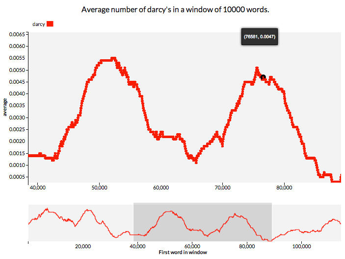
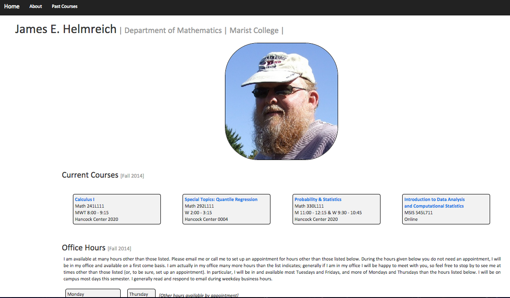
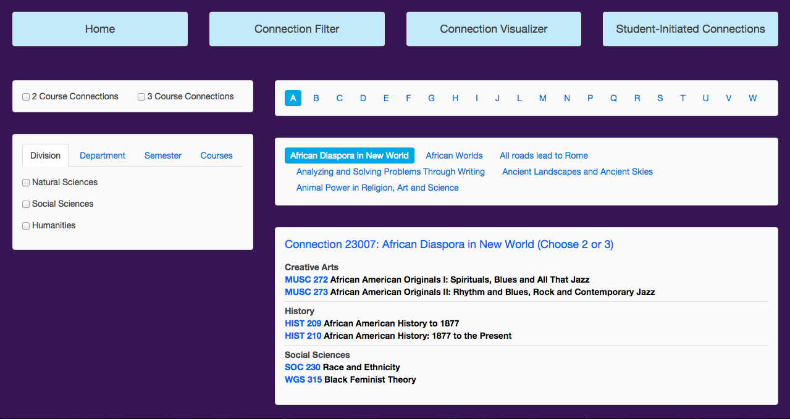

Text analysis and visualization tools. I rebuilt a graph using D3, Javascript, and HTML on the frontend, Python on the backend (and Jinja piecing everything together) that allows you to view the moving average of how often a word, string or regular expression appears over the course of a text. The updated graph includes support for RegEx queries and for displaying multiples queries at once, as well as focus brushing and zooming, and tooltips to display x,y coordinates. I additionally added the ability to download the SVG.
I redesigned the website for Professor James Helmreich (i.e. my father). Essentially I took it from a (pretty ugly) shade of orange to a much cleaner basic bootstrap scheme. In the future I would like to add a carousel of photos to the header on the homepage. In addition, I will be creating a Java app that will allow the user to view the basic interaction of a regression line compared to its quartile regression lines from a small dataset.
Part of an ongoing project for my Web Application Development course, I am working with a partner (Sara) on creating a new way for looking at the Wheaton Connection options for students attending Wheaton College. We have a unique requirement where students must take courses that 'connect' with one-another, to better foster the liberal arts interdisciplinary spirit. However, when looking at the complete list of available connections on the Wheaton website, it's not possible to sort them according to any kind of criteria. We hope to change that with our project, which will allow a student to sort the connections by division, department, semester offered, etc. The project utilizes UI-Kit and runs on HTML and Javascript. We plan to add a force-directed graph of courses within the connections using D3. We'd also like to integrate our project with another group, who are working to redo the college's course finder.
An app to let the user know whether specific films contain triggering material for them. More in the idea stage than the execution stage. More.
I have many friends and acquaintances that get severely uncomfortable at the mention of certain sensitive topics (violence, sexual assualt, etc.), to the point where exposure can bring about severe levels of stress and anxiety to the point of panic attacks, PTSD, and other undesirable outcomes. This can make consuming popular culture (namely films) difficult, as a simple R-rating does not always contain enough information to fully determine whether a film is "viewable."
I am currently teaching myself (and learning from my school's Computer Science club) iOS programming, as I believe a good solution to this problem would be an app -- Trigger Tracker -- which allows the user to preset their triggers once, and then in the future be able to look up a particular film and see if it is blacklisted for them or not.
This avoids having to read through uncomfortable film summaries and skips straight to the point: this film is not for you. There is minimal discomfort, and maximal usage.
Anyone interested on collaborating with me on this project can reach me at Helmreich_Lithia@WheatonCollege.edu or through Github (LithiaH), it is still in the very early stages and I would love to hear from you!